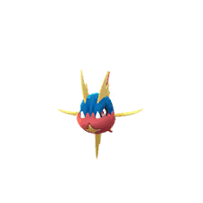
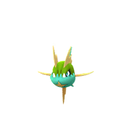

What is Mega Sharpedo?
Mega Sharpedo is a Mega Raid Boss in Pokémon GO that focuses more on offense than defense. It hits hard, but it doesn’t stay on the battlefield for long.
- Appears in Mega Raids
- Requires a group for smooth clears
- Rewards include Mega Energy and a Sharpedo encounter after the raid
How Mega Sharpedo Feels in Raids
In actual raids, Mega Sharpedo feels fast and aggressive rather than tanky or defensive.
- High damage output right from the start
- Very low bulk compared to many Mega bosses
- Battles usually finish quickly
In simple terms: it’s more of a damage race than a long survival fight.
1. Why Mega Sharpedo is Worth Doing
Mega Sharpedo isn’t just another Mega raid—it has a few useful advantages that make it worth farming when it appears.
Strong Offensive Mega
- High Attack stat makes it a strong PvE option
- Can function as both Water and Dark-type attacker depending on moveset
Mega Boost Utility
When Mega Evolved, it boosts both Water and Dark-type attacks.
This is especially useful in group raids where multiple players benefit from the boost at the same time.
- Improves overall team damage
- Very helpful in duo and trio raids
Candy Bonus Benefit
Like other Megas, Mega Sharpedo helps with extra Candy while catching Pokémon of matching types.
- Water-type Pokémon
- Dark-type Pokémon
Quick Raid Farming
Because it doesn’t have much bulk, Mega Sharpedo raids tend to be fast.
- Good for farming Mega Energy quickly
- Efficient for repeat raids
More Skill Than It Looks
Even though it looks simple on paper, raid performance depends a lot on how you play.
- Proper counters make a big difference
- Bad timing can lead to unnecessary fainting
2. How Difficult is Mega Sharpedo?
Mega Sharpedo sits in an interesting spot—it’s not a tough tank, but it can still punish unprepared teams.
Base Difficulty Overview
| Factor | Level |
|---|---|
| Damage Output | High |
| Bulk | Low |
| Overall Difficulty | Moderate |
Most of the challenge comes from its damage rather than its durability.
Moveset Difficulty Differences
| Moveset | Difficulty |
|---|---|
| Bite + Poison Fang | Easy |
| Bite + Crunch | Medium |
| Waterfall + Crunch | Hard |
| Waterfall + Hydro Pump | Very Hard |
Group Size Impact
| Players | Difficulty |
|---|---|
| Solo | Not realistic |
| Duo | Challenging |
| Trio | Comfortable |
| 4+ Players | Very easy |
Overall Impression
Mega Sharpedo is one of those raids that feels easy once your team is ready, but can punish weak counters or poor coordination.
What Actually Matters
- Using strong counters
- Dodging heavy charged moves when needed
- Having even basic team coordination
Final Takeaway
Mega Sharpedo is best described as a fast, aggressive raid boss—easy with preparation, but unforgiving if you go in unprepared.
- Strong PvE Mega option
- Useful for farming Mega Energy
- Very quick raid cycles
- Damage-heavy but not tanky
Mega Sharpedo Moves Guide
Mega Sharpedo is one of those raid bosses that feels simple on paper but can get messy quickly in battle. It hits hard, doesn’t stay alive for long, and pressures you with fast attacks.
Because of that, its moveset actually matters a lot more than most players expect.
1. Fast Moves
Fast moves decide how quickly Mega Sharpedo builds energy and how much pressure it applies in raids.
Fast Moves Table
| Move Name | Type | Damage | Energy Gain | DPS | Notes |
|---|---|---|---|---|---|
| Waterfall | Water | High | Low | High | Best raw damage option |
| Bite | Dark | Medium | Medium | Balanced | Better into Psychic/Ghost targets |
How it actually plays out:
- Waterfall feels brutal in raids — it’s slower but hits very hard and keeps constant pressure on your team.
- Bite is smoother and more flexible, especially when you want quicker charged move access or Dark-type coverage.
2. Charged Moves
This is where Mega Sharpedo becomes dangerous. Its charged moves are either heavy nukes or annoying pressure tools.
Charged Moves Table
| Move Name | Type | Damage | Energy Gain | DPS | Notes |
|---|---|---|---|---|---|
| Hydro Pump | Water | Very High | High | High | Big finishing nuke |
| Crunch | Dark | Medium | Low | Efficient | Reliable spam pressure |
| Poison Fang | Poison | Low | Very Low | Utility | Defense debuff tool |
What matters in real raids:
- Hydro Pump is the move that can punish careless teams — it’s slow, but when it lands, it hurts.
- Crunch is what you’ll see most often. It doesn’t feel scary individually, but it adds up over time.
- Poison Fang is less about damage and more about weakening your team’s defense pressure.
3. Raid Boss Move Combinations
Mega Sharpedo’s difficulty depends heavily on its fast + charged move pairing. Some combos are much more punishing than others.
Moveset Difficulty Table
| Fast Move | Charged Move | Difficulty |
|---|---|---|
| Waterfall | Hydro Pump | Very Hard |
| Waterfall | Crunch | Medium |
| Bite | Crunch | Easy |
| Bite | Poison Fang | Easy |
In practice:
- Waterfall + Hydro Pump is the dangerous one — if you don’t dodge properly, it can delete fragile counters.
- Waterfall + Crunch is still strong but manageable with good typing advantage.
- Bite-based sets are much more forgiving overall.
4. Moves You Need to Respect
A few of Mega Sharpedo’s moves stand out as real threats during raids.
| Move | Why It Matters |
|---|---|
| Hydro Pump | Heavy burst damage that can knock out glass cannons |
| Waterfall | Constant fast-move pressure throughout the fight |
| Crunch | Steady chip damage that builds up over time |
Simple way to think about it:
- Hydro Pump = sudden danger spike
- Waterfall = constant pressure
- Crunch = slow but steady damage accumulation
Summary
- Strongest fast move pressure: Waterfall
- Most dangerous charged move: Hydro Pump
- Most forgiving moveset: Bite + Poison Fang
- Hardest matchup: Waterfall + Hydro Pump
Mega Sharpedo Performance Guide
Mega Sharpedo is one of those Pokémon that feels amazing in short bursts but very punishing if you misplay it. It hits hard, but it doesn’t stay on the field for long.
- Very high Attack stat
- Extremely fragile defenses
- Fast, aggressive playstyle
Overall, it performs best in PvE content like raids and gym offense, while PvP usage is almost non-existent.
1. PvP Performance (Trainer Battles)
Mega Pokémon are generally not part of PvP formats, and Mega Sharpedo is no exception.
- Not allowed in Great, Ultra, or Master League
- Also excluded from most themed cups
If we only look at its base form, Sharpedo itself is still very glassy. It can deal damage quickly, but it rarely survives long enough to fully execute a strategy.
Overall PvP situation
| League | Status |
|---|---|
| Great League | Not usable |
| Ultra League | Not usable |
| Master League | Not usable |
| Special Cups | Not allowed |
Bottom line: PvP is simply not a realistic use case for this Pokémon.
2. PvE Performance
Where Mega Sharpedo becomes relevant is PvE content like raids, gyms, and Rocket battles.
- Strong Dark-type attacker
- Solid Water-type damage option
- Provides useful Mega damage boost to teammates
The trade-off is clear—it hits hard, but it doesn’t take hits well at all.
Best moveset for PvE
- Fast Move: Waterfall
- Charged Move: Hydro Pump / Crunch
Move choice depends on the matchup:
- Use Hydro Pump for Water-weak raid bosses
- Use Crunch when targeting Psychic or Ghost types
3. Raid Performance
In raids, Mega Sharpedo is mostly used for two things: damage and Mega boost support.
- High burst DPS makes it very effective in short fights
- Mega boost helps other Water and Dark attackers
However, it fainting quickly means you’ll often need to rely on revives or switch rotations.
Raid role overview
| Aspect | Performance |
|---|---|
| Damage output | Excellent |
| Survivability | Poor |
| Team support | Very strong |
Simple strategy: use it early in the raid to apply the Mega boost, then switch to bulkier counters if needed.
4. Gym Battles
Mega Sharpedo is much better on offense than defense.
Gym offense
- Clears defenders quickly
- Works well for fast gym takedowns
Gym defense
Not recommended at all. Its low bulk makes it easy to defeat even without optimal counters.
Summary
| Role | Effectiveness |
|---|---|
| Offense | Strong |
| Defense | Very weak |
5. Cup and League Usage
Because Mega Pokémon are restricted in PvP, Mega Sharpedo has almost no competitive presence in leagues or themed cups.
- Not usable in standard PvP formats
- Rarely relevant even in limited cups
Even its base form struggles in most formats due to low survivability.
Overall viability
| Format | Status |
|---|---|
| Open PvP | Not viable |
| Limited Cups | Rare use cases |
| Special Cups | Not recommended |
Final Verdict
Mega Sharpedo is best understood as a pure damage-focused Mega with very little flexibility outside PvE.
Where it performs well:
- Raids (high burst damage)
- Gym offense
- Mega boost support role
Where it struggles:
- PvP formats
- Gym defense
- Long survivability fights
Mega Sharpedo Raid Strategy Guide
Mega Sharpedo is one of those raid bosses where things don’t last long. It hits hard, but it also goes down quickly if your team is prepared.
- High damage output
- Very low defense
- Fast-paced raid battles
In most cases, the fight is decided in the first 30–60 seconds.
Solo Attempts
Realistically, Mega Sharpedo is not designed for solo raids. Even highly optimized teams struggle here.
Can you solo it?
- Not reliably possible for most players
- Requires maxed Level 50 Pokémon
- Needs ideal weather and perfect execution
Even under perfect conditions, success is inconsistent.
If you still try
- Use Electric, Grass, Fighting, Fairy, or Bug attackers
- Focus on pure damage rather than bulk
- Be ready for multiple relobbies
| Factor | Reality |
|---|---|
| Difficulty | Extreme |
| Success chance | Very low |
Duo Strategy
With strong players, a duo is absolutely possible—but it still requires coordination.
What you need
- High-level counters (35–50 range)
- Proper Mega boost
- Weather advantage if possible
How to approach it
- Start with a Mega Pokémon to boost team damage
- Stick to Electric and Grass attackers
- Be ready to dodge heavy hits like Hydro Pump
| Moveset | Difficulty |
|---|---|
| Bite + Poison Fang | Easy |
| Bite + Crunch | Moderate |
| Waterfall + Crunch | Hard |
| Waterfall + Hydro Pump | Very hard |
Key point: Hydro Pump changes everything—dodging becomes essential.
Trio Strategy
With three decent players, Mega Sharpedo becomes much more manageable.
Why trio works well
- Low defense makes damage stack quickly
- No need for perfect counters
- Less pressure on individual performance
| Player Level | Difficulty |
|---|---|
| 30+ | Easy |
| 40+ | Very easy |
Beginner Approach
If you’re new, the main goal is simple—stay active and deal consistent damage.
- Use recommended Electric or Grass Pokémon
- Avoid using random low-level teams
- Focus on staying in the raid rather than perfect play
Even fainting early is fine—just rejoin quickly and continue dealing damage.
Intermediate Play
At this stage, it’s less about survival and more about efficiency.
- Build proper type advantage teams
- Start learning charged move timing
- Begin dodging key attacks when possible
Focus: balancing damage output with survivability.
Advanced Play
This is where raids become more optimized and structured.
- Pre-built counter teams ready before battle
- Use Shadow Pokémon for higher DPS
- Strategic Mega evolution timing for team boost
- Learn when to dodge vs when to tank
- Track boss moves as the fight progresses
Expert Strategy
At the highest level, it becomes about speed and precision.
- Level 50 optimized teams
- Shadow-heavy compositions
- Minimal downtime between relobbies
Expert players focus on keeping damage uptime as high as possible throughout the raid.
General Raid Tips
Regardless of your level, a few things always matter:
- Hydro Pump is the most dangerous move—watch for it
- Electric and Grass attackers perform best overall
- Fast aggression usually wins this raid
Final Verdict
| Mode | Difficulty | Recommendation |
|---|---|---|
| Solo | Not practical | Avoid |
| Duo | Hard | Skilled players only |
| Trio | Easy | Best balance |
| 4+ players | Very easy | Safe win |
Final Thought
Mega Sharpedo raids are all about speed. If your team has strong Electric or Grass attackers, the fight rarely lasts long enough to become complicated.
Mega Sharpedo Counters Guide
Mega Sharpedo is a Water/Dark-type raid boss, so building the right team is very straightforward once you understand its weaknesses.
Weaknesses
The best damage against Mega Sharpedo comes from a few key types:
| Type | Effectiveness |
|---|---|
| Electric | Very strong |
| Grass | Very strong |
| Fairy | Strong |
| Fighting | Strong |
| Bug | Situational |
Electric and Grass-types are usually the most reliable picks for most players.
Top Raid Counters
These are the strongest Pokémon you can bring if you want fast raid clears:
- Zekrom
- Xurkitree
- Kartana
- Tapu Koko
- Lucario
- Conkeldurr
Why these stand out: Electric attackers like Zekrom and Xurkitree melt Water-types, while Kartana brings extremely high Grass-type DPS. Fighting attackers help mainly for Dark coverage.
Best Accessible Counters
If you don’t have top-tier legendary Pokémon, these options still work very well:
- Raikou
- Electivire
- Roserade
- Zarude
- Togekiss
- Machamp
These are much easier to build and still perform well in most raid groups, especially if powered up properly.
Type-Based Breakdown
Electric-type attackers
- Zekrom
- Xurkitree
- Raikou
Electric is the most consistent option because it directly punishes Sharpedo’s Water typing and delivers very high DPS without complicated setup.
Grass-type attackers
- Kartana
- Roserade
- Zarude
Grass-types hit just as hard as Electric in many cases, but they are slightly safer depending on your lineup and moveset coverage.
Fighting-type attackers
- Lucario
- Conkeldurr
- Machamp
These are mainly useful for dealing with Dark typing. They are not the main focus, but still solid backup options.
Fairy-type attackers
- Togekiss
- Gardevoir
Fairy-types are safer to use since they resist Dark moves, but their damage output is lower compared to Electric and Grass.
Bug-type attackers
- Genesect
- Scizor
Bug-types can work, but they are generally weaker and should only be used if you don’t have better options built.
What to Avoid
Some types perform poorly in this matchup and should generally be skipped:
| Type | Reason |
|---|---|
| Fire | Strongly resisted by Water typing |
| Ground | Not very effective and slow in raids |
| Psychic | Weak against Dark-type moves |
| Ghost | Also weak to Dark attacks |
Simple Raid Strategy
- Prioritize Electric attackers first
- Use Grass-types as strong backups
- Bring Megas for team damage boosts
- Dodge charged moves like Hydro Pump when possible
A balanced Electric + Grass team usually clears Mega Sharpedo raids without much difficulty.
Final Thoughts
Electric-type Pokémon dominate this raid because they directly exploit Sharpedo’s Water typing and maintain very high damage output. Grass-types are a strong secondary option, while everything else mainly fills gaps depending on your roster.
Shiny Comparison – Mega Sharpedo
Shiny Pokémon are always a big attraction in raids, and Mega Sharpedo is no exception. Its shiny form stands out a lot more than the regular version, which makes it a popular chase for collectors.
Normal vs Shiny Appearance
Normal Sharpedo
- Deep blue body
- White underbelly
- Yellow star-like markings
Shiny Sharpedo
- Bright purple / magenta body
- Light pink accents
- Same star pattern, but more vivid
Shiny Mega Sharpedo
When Sharpedo Mega Evolves, the shiny form becomes even more striking.
- Retains its purple shiny color
- Looks bulkier and more aggressive
- Star patterns appear more pronounced
Overall, shiny Mega Sharpedo has a much more intimidating look compared to the normal version and easily stands out in raids.
How Shiny Encounters Work
After completing the raid, you won’t directly encounter Mega Sharpedo. Instead, you catch a regular Sharpedo, which has a chance to be shiny.
- Shiny can appear from the raid encounter
- Shiny odds in Mega raids are boosted (around ~1 in 60)
So while it’s not guaranteed, Mega raids are still one of the better ways to hunt for shiny Pokémon.
Why Players Hunt Shiny Sharpedo
Even though shiny Sharpedo doesn’t change in battle performance, it’s still highly sought after for a few reasons.
Collector appeal
- Unique purple design
- Visually very different from the normal form
Battle value
- No stat difference compared to normal Sharpedo
- Purely cosmetic upgrade
Overall feel
- Feels more rewarding to obtain
- One of the more noticeable shiny Mega forms
Common Shiny Hunting Mistakes
Most mistakes during shiny encounters happen because players get too excited.
- Throwing too quickly and missing balls
- Not noticing the shiny animation properly
- Forgetting that it’s still a normal catch process
Better approach:
- Take your time
- Use Pinap Berry if you want extra candy
- Focus on clean, accurate throws instead of rushing
Shiny Comparison Table
| Feature | Normal | Shiny |
|---|---|---|
| Color | Blue | Purple |
| Rarity | Common | Rare |
| Stats | Same | Same |
| Catch Type | Standard encounter | Guaranteed catch if shiny |
Final Thoughts
Shiny Mega Sharpedo doesn’t offer any competitive advantage, but it easily stands out as one of the more visually striking Mega Evolutions. For most players, it’s less about battle strength and more about the satisfaction of owning a rare shiny form.

Carvanha

Shiny Carvanha
Sharpedo
Shiny Sharpedo
Mega Sharpedo
Shiny Mega Sharpedo
Evolution & Buddy Guide for Mega Sharpedo
1. Evolution Line (Simple but Efficient)
Mega Sharpedo comes from a very straightforward evolution line, which makes it easy to build compared to many other Pokémon.
- Carvanha evolves into Sharpedo
- Sharpedo can then Mega Evolve into Mega Sharpedo
The entire line is short, so you don’t need rare candy chains or special requirements—just basic farming and Mega Energy.
| Requirement | Value |
|---|---|
| Evolution | 50 Carvanha Candy |
Once you have Sharpedo, Mega Evolution becomes the next step:
| Requirement | Value |
|---|---|
| First Mega Evolution | 200 Mega Energy |
| After Unlock | Reduced Mega Energy cost |
2. What You Get From Mega Evolution
Mega Sharpedo is mainly used for offense and team support rather than tanking damage.
- Boosts its own Attack significantly
- Gives bonuses to Water and Dark-type allies in raids
- Helps increase catch Candy during raid bonuses
3. Buddy Distance (Easy Candy Farming)
One of the best things about Carvanha and Sharpedo is how easy they are to walk as buddies.
| Pokémon | Distance per Candy |
|---|---|
| Carvanha | 1 km |
| Sharpedo | 1 km |
This makes Candy farming extremely fast compared to most other Pokémon.
4. Why This Line Is Easy to Build
- Only 1 km walking distance per Candy
- No special evolution items required
- Fast Candy accumulation during events
In practice: You can evolve and power up Sharpedo much faster than most Water-type attackers.
5. Best Buddy Strategy (Simple Approach)
If you're planning to invest in Mega Sharpedo, using it as your buddy is a very efficient choice.
- Walk regularly to collect Candy passively
- Use Adventure Sync to gain distance even when not actively playing
- Take advantage of walking events for faster progress
Over time, this makes powering up Sharpedo much easier without heavy grinding.
6. Mega Level Progression
As you use Mega Sharpedo more often, its Mega Level increases and improves rewards over time.
| Mega Level | Benefit |
|---|---|
| Base | Standard Mega bonuses |
| Higher Level | Increased Candy rewards |
| Max Level | Chance for Candy XL bonus |
The more you use it, the more value you get from it over time.
7. Common Mistakes Players Make
- Not walking Carvanha early when Candy farming is easiest
- Ignoring the 1 km advantage and switching buddies too often
- Spending Mega Energy before unlocking permanent discount
- Not planning Candy farming during events
Final Evolution Summary
| Stage | Requirement |
|---|---|
| Carvanha → Sharpedo | 50 Candy |
| Sharpedo → Mega Sharpedo | Mega Energy |
Final Thoughts
Mega Sharpedo is one of those Pokémon that feels easy to build but still rewarding in raids.
Because of its short buddy distance and simple evolution path, it’s a solid choice if you want a fast-to-build Mega without heavy grinding.
Best Mega Pokémon Against Mega Sharpedo
Choosing the right Mega Evolution makes a big difference in this raid. It doesn’t just increase your own damage—it also boosts the entire team’s performance.
- Increases overall raid damage
- Boosts allies using the same type
- Helps clear the raid faster
Top Mega Counters
These Mega Pokémon are the most reliable choices for Mega Sharpedo raids, especially if you’re building Electric or Grass teams.
Electric Megas
Mega Manectric
- One of the highest Electric-type damage dealers
- Great for boosting Electric attackers in the group
Mega Ampharos
- A bit bulkier than Manectric
- More stable in longer fights
Grass Megas
Mega Sceptile
- Strong Grass-type DPS option
- Best used in focused Grass teams
Mega Venusaur
- Balanced between damage and survivability
- Easier to use in casual raid groups
Best Mega for Team Support
Mega Manectric is usually the best overall choice here.
- Boosts Electric-type attacks, which are commonly used against Sharpedo
- Helps maximize group damage output
- Pairs well with most raid setups
In most raid lobbies, this is the Mega that benefits the entire team the most.
Situational Mega Choices
These Megas aren’t the top picks, but they can still work depending on your team or weather.
Mega Abomasnow
- Works if you’re running a Grass-heavy lineup
- Better value in Sunny weather
Mega Gardevoir
- Can help you survive Dark-type pressure more comfortably
- Safer option for less experienced players
Mega Blaziken
- Only useful if you’re already running Fighting-type attackers
Megas That Don’t Work Well Here
Some Mega Pokémon simply don’t fit this raid matchup and end up offering very little value.
| Mega | Reason |
|---|---|
| Fire Megas | Take super effective damage from Water attacks |
| Psychic Megas | Get punished by Dark-type moves |
| Ghost Megas | Also weak to Dark pressure |
How to Choose the Right Mega
The easiest way to decide is to match your Mega with whatever your team is already using.
Example raid setups:
Electric-focused team
- Use → Mega Manectric
- Result → Maximum team damage output
Grass-focused team
- Use → Mega Sceptile or Mega Venusaur
- Result → More stable performance
Mixed team
- Electric Megas usually give the best overall value
Mega Tier Overview
| Rank | Mega Pokémon | Role |
|---|---|---|
| 1 | Mega Manectric | Best overall team support |
| 2 | Mega Ampharos | Balanced damage and bulk |
| 3 | Mega Sceptile | High Grass DPS |
| 4 | Mega Venusaur | Reliable all-rounder |
| 5 | Mega Gardevoir | Safer defensive option |
Final Insight
In Mega Sharpedo raids, your Mega choice affects more than just your own damage. The right Mega can noticeably speed up the entire raid, especially when your team is running matching attack types.
Candy Boost Guide with Mega Sharpedo
Mega Evolutions aren’t just for raids—they’re actually one of the easiest ways to boost Candy gains while catching Pokémon.
Mega Sharpedo is especially useful during Water and Dark-type focused events, where it quietly increases your overall Candy income without any extra effort.
1. How Mega Sharpedo Helps with Candy
When Mega Sharpedo is active, you get extra Candy for catching Pokémon that match its types.
This applies to:
- Water-type Pokémon
- Dark-type Pokémon
It’s a passive bonus, so you don’t need to do anything special during catches.
2. Mega Level Matters
The benefit you get depends on your Mega Level. Higher levels give better rewards.
| Mega Level | Candy Bonus |
|---|---|
| Base Level | +1 Candy |
| High Level | +2 Candy |
| Max Level | +2 Candy + chance of XL Candy |
3. Best Pokémon to Farm with Mega Sharpedo
To get the most value, use Mega Sharpedo during spawns that match its types.
Water-type targets
- Magikarp
- Kyogre
- Squirtle
Dark-type targets
- Poochyena
- Deino
- Darkrai
4. Important Catch Detail
- After a Mega Sharpedo raid, you catch regular Sharpedo—not the Mega form
- The Mega bonus only applies when the Pokémon type matches Water or Dark
- This makes Sharpedo itself a valid bonus target after raids
5. Common Mistakes Players Make
- Forgetting to activate a Mega before catching
- Using a Mega that doesn’t match spawn types
- Ignoring Mega Level upgrades
- Not taking advantage of event spawn rotations
6. Best Candy Farming Strategy
The simplest way to maximize Candy is timing everything together.
Best setup
- Activate Mega Sharpedo before starting your catch session
- Farm during Water or Dark-type events
Better optimization
- Use Pinap Berries for extra Candy
- Stack with event bonuses whenever possible
Maximum Candy setup
| Bonus | Effect |
|---|---|
| Pinap Berry | 2× Candy |
| Mega Bonus | +1 to +2 Candy |
| Event Bonus | Extra multipliers (varies) |
Final Takeaway
Mega Sharpedo is not about battle performance—it’s mainly a farming tool. When used during the right events, it quietly increases your Candy and XL Candy gains over time without changing your gameplay much.
Mega Sharpedo Weakness Guide
Mega Sharpedo is not the bulkiest raid boss, but it can still punish unprepared teams. The good news is that it has several clear weaknesses you can easily exploit.
1. Typing Overview
Mega Sharpedo is a Water and Dark-type Pokémon. That gives it multiple weaknesses, especially to Electric and Grass attackers.
2. Type Weaknesses
These are the main types that deal super effective damage:
| Type | Effectiveness |
|---|---|
| Electric | Very strong |
| Grass | Very strong |
| Fairy | Strong |
| Fighting | Strong |
| Bug | Situational |
3. What Each Weakness Feels Like in Battle
Electric
This is the most reliable option. Electric-types directly target Sharpedo’s Water typing, and there’s no awkward resistance to worry about.
- Best overall damage output
- Works well in solo and duo raids
Grass
Grass attackers are a solid alternative, especially if the weather is in your favor.
- Consistent performance
- Great backup if you lack strong Electric Pokémon
Fairy
Fairy-types mainly help by targeting the Dark side of Sharpedo. They’re not the fastest option, but they are safer to use.
- Easier survivability
- Good choice for less experienced players
Fighting
Fighting Pokémon also exploit the Dark typing and provide reliable damage if your team is limited.
- Good budget option
- Works well as a secondary counter type
Bug
Bug types technically work, but in practice they lag behind other options in damage output.
- Use only if better counters are unavailable
4. Best Weakness Priority
Not all counters perform equally. If you want the smoothest raid experience, this is the order that usually works best:
| Rank | Type | Reason |
|---|---|---|
| 1 | Electric | Highest and most consistent DPS |
| 2 | Grass | Reliable backup option |
| 3 | Fighting | Solid secondary damage |
| 4 | Fairy | Safer but slightly slower |
| 5 | Bug | Least efficient overall |
5. Simple Mistake Most Players Make
A lot of trainers spread their team too thin across multiple counter types. In reality, you’ll get better results by focusing mainly on Electric attackers and keeping Grass as backup.
6. Moveset Can Change the Fight
Mega Sharpedo’s moveset can slightly shift which counters feel safest in battle.
| Moveset | Best Response |
|---|---|
| Waterfall + Hydro Pump | Electric counters perform best |
| Bite + Crunch | Fairy or Fighting becomes more comfortable |
7. Simple Raid Approach
If you want a clean and easy win, this setup works well:
- Strong Electric-type attackers as your main team
- Grass-types as backup damage dealers
- Mega Electric Pokémon if available for extra boost
During the raid, just focus on maintaining steady damage and dodging heavy charged moves when possible.
Final Thoughts
Mega Sharpedo looks intimidating at first, but once you bring Electric or Grass attackers, the fight becomes straightforward. Electric-types especially make the raid much faster and more efficient compared to other options.
Mega Sharpedo Resistance Guide
Knowing what Mega Sharpedo resists is just as important as knowing its weaknesses. Using the wrong Pokémon can slow your raid a lot more than you expect.
1. Mega Sharpedo’s Typing
Mega Sharpedo is a Water and Dark-type Pokémon, which gives it a mix of useful resistances and a few key weaknesses.
- Water-type
- Dark-type
This combination decides which attacks it can comfortably shrug off during raids.
2. What It Resists
Mega Sharpedo takes reduced damage from several common attack types, especially Psychic-based moves.
| Type | Effect |
|---|---|
| Psychic | Strong resistance |
| Ghost | Resisted |
| Dark | Resisted |
| Fire | Resisted |
| Water | Resisted |
| Ice | Resisted |
Key takeaway: Psychic attackers are especially weak against Mega Sharpedo, so they should generally be avoided.
3. What This Means in Raids
Resistance directly affects how fast your raid goes. Even strong Pokémon can feel underwhelming if they’re hitting into the wrong typing.
- Resisted attacks deal noticeably lower damage
- Raid progress slows down
- You may end up needing extra players or relobbies
4. Pokémon Types You Should Avoid
Some commonly used types actually perform poorly here, even if their CP is high.
| Type | Reason |
|---|---|
| Psychic | Strongly resisted by Dark typing |
| Ghost | Not very effective |
| Dark | Resisted mirror typing |
| Fire | Reduced by Water typing |
| Water | Resisted damage output |
| Ice | Also resisted |
Simple rule: even high CP Pokémon won’t help much if they’re using resisted moves.
5. Smart Counter Strategy
Instead of focusing only on CP, always check typing first.
- Electric and Grass-type attackers usually perform much better here
- Lower CP with correct typing often beats high CP with wrong typing
6. Resistance vs Weakness Balance
Mega Sharpedo is interesting because it feels tanky against some types but extremely fragile against its weaknesses.
- Wrong counters → very low damage
- Correct counters → extremely fast raid damage
Takeaway: performance swings heavily depending on your team choice.
7. Quick Resistance Summary
| Category | Types |
|---|---|
| Strong resistance | Psychic |
| Moderate resistance | Fire, Water, Ice, Dark, Ghost |
| Best avoided attackers | Psychic, Ghost, Fire, Water |
Pro Insight
Mega Sharpedo punishes wrong type choices heavily. Even strong Pokémon can feel useless if they’re hitting into resistances, which is why type advantage matters more than raw CP in this raid.
Mega Sharpedo Final Conclusion
Mega Sharpedo feels very different from most Mega Raid Pokémon. Instead of surviving long fights, it pushes you into a fast, aggressive playstyle where every second of damage matters.
Overall Performance
- Its Attack is extremely high, making it a strong damage-focused Mega
- Low bulk means it doesn’t stay in battle for long
- Works really well in raids where speed matters more than survival
- Not useful in PvP battles
What Makes It Stand Out
This is not a “safe” Mega—it rewards clean execution and punishes mistakes quickly.
- You need to react fast during raids
- Mistimed plays or wrong counters can waste its short uptime
- Strong coordination and proper counters make a big difference
- Dodging and timing help you get the most out of it
Best Use Cases
- Raid attacker for Water and Dark-type matchups
- Mega boost support for teammates’ damage
- Fast-clear raid groups that prioritize speed over safety
It feels especially good in:
- Small raid groups
- High DPS-focused teams trying to finish quickly
Key Limitations
- Faints very quickly in most raid battles
- Not forgiving if you make mistakes mid-fight
- Less flexible compared to bulkier Mega Pokémon
Final Thoughts
Mega Sharpedo turns raids into a pure damage race. If you like fast-paced battles where you try to squeeze out every bit of DPS before fainting, it feels great to use. But if you prefer safer, more stable gameplay, bulkier Megas will always feel easier to handle.
Catch CP Guide for Mega Sharpedo
After defeating Mega Sharpedo, you’ll actually encounter regular Sharpedo in the catch screen, not its Mega form.
1. Sharpedo CP Range After Raid
Normal conditions
| IV Level | CP |
|---|---|
| 100% IV (Perfect) | ~1910 CP |
| 0% IV | ~1830 CP |
Weather boosted (Rainy / Fog)
| IV Level | CP |
|---|---|
| 100% IV (Perfect) | ~2388 CP |
| 0% IV | ~2290 CP |
2. What 100% IV CP Actually Means
- 1910 CP → perfect Sharpedo (normal weather)
- 2388 CP → perfect Sharpedo (weather boosted)
If you see these CP values, it’s worth paying extra attention during the catch.
Practical tip: Don’t rush these encounters—use Golden Razz and aim carefully.
3. Weather Boost and CP Changes
Weather affects both CP and difficulty during the catch.
- Rainy weather boosts Water-type conditions
- Fog weather boosts Dark-type conditions
- Boosted raids always result in higher CP encounters
Higher CP doesn’t change IV, but it does make the encounter feel more important.
4. CP Comparison Overview
| Condition | Level | Max CP |
|---|---|---|
| Normal | 20 | 1910 |
| Weather boosted | 25 | 2388 |
5. How to Read CP for IV Checking
You can roughly judge IVs just by looking at CP after the raid.
- CP near 1910 or 2388 → likely high IV
- Noticeably lower CP → average or low IV
Examples:
- ~1900 CP → very strong catch
- ~1850 CP → average roll
- ~1830 CP → low IV
6. When You Should Focus on Catching
- CP is close to 1910 or 2388
- Weather-boosted encounter
- Shiny Sharpedo encounter
For lower CP encounters, you don’t need to stress too much about perfect throws.
7. Common Mistakes Players Make
- Ignoring CP and assuming all encounters are equal
- Missing the 100% IV CP reference
- Wasting berries on low-value catches
- Panicking and throwing too quickly on high CP Pokémon
Final CP Summary
| Key Info | Value |
|---|---|
| 100% CP (Normal) | 1910 |
| 100% CP (Weather Boosted) | 2388 |
| Best Condition | Weather Boosted |
| Catch priority | High CP encounters |
Final Thought
Knowing the CP ranges helps you quickly identify whether a Sharpedo is worth extra attention or just a standard catch. Over time, this makes raid rewards feel a lot more meaningful.
Weather Boost Guide for Mega Sharpedo
Weather can completely change how this raid feels. Sometimes it makes Mega Sharpedo noticeably tougher, and other times it actually helps your own counters deal more damage.
1. When Mega Sharpedo Gets Boosted
Since Mega Sharpedo is Water/Dark-type, it benefits from two different weather conditions.
| Weather | Boost Type |
|---|---|
| Rainy | Water |
| Fog | Dark |
In boosted weather, you’ll notice the raid boss feels stronger and catches also come with higher CP.
- Boss hits harder in battle
- Moves deal more damage
- Caught Sharpedo has higher CP
2. How Weather Changes the Raid
Rainy Weather
This is the most dangerous condition for this raid.
- Strong Water-type moves like Waterfall and Hydro Pump get boosted
- Overall DPS increases a lot
In practice, this makes the raid feel noticeably harder, especially in small groups.
Fog Weather
Fog boosts Dark-type moves like Bite and Crunch.
- Damage increase is moderate compared to Rainy weather
- Still makes the boss more aggressive, but slightly easier than Rainy conditions
| Weather | Difficulty |
|---|---|
| No Boost | Normal |
| Fog | Moderate |
| Rainy | Hard |
3. Weather Can Also Help Your Counters
One important thing players often forget is that weather boosts don’t just affect the boss—they also affect your Pokémon.
| Weather | Best Boosted Counters |
|---|---|
| Rainy | Electric types |
| Sunny | Grass types |
| Cloudy | Fighting & Fairy types |
Important detail: Rainy weather makes the boss stronger, but at the same time Electric-type counters also get boosted—so it becomes a trade-off.
4. Higher CP After Catch
When weather is active, the caught Sharpedo usually comes with higher CP, which can save you resources later.
| Condition | CP Result |
|---|---|
| Normal | Standard CP |
| Weather Boosted | Higher CP |
This is useful if you plan to power it up for raids or PvP later.
5. Pros and Cons of Weather Boost
Weather boosts can be helpful, but they also make raids less predictable.
Benefits:
- Higher CP catches
- Faster raid completion when using boosted counters
- Better overall rewards
Downsides:
- Boss becomes stronger
- More fainting during battle
- Requires better counter selection
6. Best Way to Use Weather to Your Advantage
Best scenario
Rainy weather + strong Electric-type team
- Both sides are boosted
- High damage output from your team
- Faster raid completion overall
Easier alternative
Sunny weather with Grass-type counters
- Boss is not boosted
- Your counters perform better
- Safer and more stable raids
7. When It’s Better to Skip Weather Boost Raids
Sometimes it’s better to wait instead of raiding in bad conditions.
- If your team is not fully powered up
- If you’re raiding in a small group
- If Rainy weather boosts dangerous moves like Hydro Pump
Final takeaway
Weather boosts add both risk and reward. If you use the right counters, it speeds up raids. If you’re underprepared, it can make the fight much harder than expected.
Is It Worth Raiding Mega Sharpedo?
1. Why You’d Want to Raid It
Mega Energy Unlock
The main reason most players go after Mega Sharpedo raids is simple—you need Mega Energy to unlock it.
- Used to Mega Evolve Sharpedo into Mega Sharpedo
- After the first evolution, future energy cost becomes lower
Why this matters:
- Once unlocked, you can Mega Evolve it anytime (with reduced cost later)
- Useful if you’re building your Mega collection over time
Strong Raid Attacker (PvE Focus)
Mega Sharpedo is built for offense. It doesn’t last long in battle, but it hits hard.
- High DPS Water-type attacker
- Also performs well as a Dark-type attacker
- Provides strong Mega boost support to teammates
Where it helps most:
- Psychic-type raid bosses
- Fire and Ground-type raids
Team Damage Boost
Like other Megas, Mega Sharpedo boosts the damage of teammates using matching types.
- Improves overall raid damage output
- Helps clear raids faster in small groups
This becomes especially useful in duo or trio raids where every bit of damage counts.
2. Where It Falls Short
Very Fragile in Battle
Mega Sharpedo doesn’t stay on the field for long.
- Faints quickly in raids
- Needs frequent healing or revives
No PvP Value
- Mega Pokémon cannot be used in PvP leagues
- Even regular Sharpedo struggles due to low bulk
Outclassed by Other Megas
While it’s strong offensively, there are often better Mega options available.
- Other Megas offer better survivability
- Some provide stronger or more flexible typing
3. Who Should Actually Raid It?
It’s worth raiding if you:
- Need Mega Energy for collection or progression
- Focus mainly on raid content (PvE)
- Play in small groups or coordinated teams
- Want a strong Water or Dark Mega option
You can skip it if you:
- Mainly play PvP
- Prefer bulky, long-lasting Pokémon
- Already have stronger Water/Dark Megas built
4. Quick Value Check
| Category | Rating |
|---|---|
| Mega Energy Value | ★★★★★ |
| PvE Performance | ★★★★☆ |
| PvP Relevance | ★☆☆☆☆ |
| Ease of Use | ★★★☆☆ |
| Overall Value | ★★★★☆ |
5. When It’s Worth Raiding Most
Mega Sharpedo is most valuable during:
- New Mega release rotations
- Special raid events
- When you specifically need a Dark/Water Mega boost
- When you’re farming Mega Energy efficiently
6. When You Can Skip It
You don’t need to prioritize this raid if:
- You’ve already unlocked Mega Sharpedo
- You’re not interested in Water/Dark Megas
- Stronger raid bosses are currently available
Final Verdict
Mega Sharpedo is worth raiding, but only in the right situation.
- Great for Mega Energy and PvE damage
- Not useful in PvP at all
- Best value comes from short-term raid needs rather than long-term dominance
Simple Takeaway
Mega Sharpedo is a “raid now if you need it” Pokémon—not something you must grind every time it appears. It shines in specific situations, but it’s not essential for every player.
Personal Raid Experience with Mega Sharpedo
First Impression
The first time I went up against Mega Sharpedo, it didn’t feel like a typical raid boss. The pace of the fight stood out immediately.
Instead of a long, drawn-out battle, everything felt fast and aggressive right from the start.
How the Battle Actually Felt
Mega Sharpedo doesn’t give you much time to settle in. Its fast moves constantly chip away at your team, and when Hydro Pump connects, it can take out even strong counters in one hit.
It quickly turns the raid into a situation where you’re reacting more than planning.
Small Group vs Large Group Experience
In smaller groups, the raid feels intense and unforgiving. Every mistake matters more than usual—whether it’s a missed dodge or bringing the wrong counter.
There were attempts where things went wrong simply because we didn’t dodge Hydro Pump in time or took too long to rejoin after fainting.
With larger groups, the raid becomes easier to clear, but it still doesn’t feel completely relaxed. Mega Sharpedo’s damage is high enough that careless play can still cause multiple faintings even in big lobbies.
What I Learned After a Few Raids
Dodging actually makes a big difference
Once I started consistently dodging Hydro Pump, my Pokémon lasted noticeably longer, and overall damage output improved.
Type advantage matters more than CP
High CP Pokémon didn’t perform as well as expected. Switching to proper counters like Electric and Grass types made the raid much smoother.
It’s more of a speed check than a stamina test
Unlike bulky raid bosses, this one doesn’t require long survival. The real focus is dealing damage quickly before your team gets overwhelmed.
Early Mistakes
At first, I underestimated Mega Sharpedo because of its low bulk. That assumption didn’t hold up in actual raids.
The damage output was enough to cause multiple team wipes, especially when dodging was ignored or counters weren’t optimized.
What Makes This Raid Stand Out
Mega Sharpedo feels different because it doesn’t drag on. Battles are short, fast, and unforgiving.
- It punishes mistakes immediately
- It rewards proper timing and smart dodging
- It becomes much easier with correct counters
Final Personal Take
Mega Sharpedo feels less like a traditional raid and more like a high-speed duel. It’s quick, aggressive, and doesn’t forgive careless play.
From experience, success here depends less on how many players you have and more on how cleanly you execute the fight—especially in smaller groups where every second counts.
Mega Sharpedo Unique Insights
1. A True Glass Cannon Raid Boss
Mega Sharpedo doesn’t play like a normal raid boss. It’s either over quickly or it becomes a disaster if your team is unprepared.
Most raid bosses usually feel balanced, but this one pushes the fight into a pure damage race.
- Either you delete it fast
- Or it starts deleting your team
What this changes:
- Short, explosive battles
- DPS matters far more than bulk
- Small mistakes can snowball quickly
Overall, it feels like one of the fastest and most aggressive Mega raid fights in Pokémon GO.
2. Electric-types Have a Clear Advantage
Electric attackers perform especially well here, more than in most Water-type raids.
- Water typing is fully exploitable
- Dark typing doesn’t reduce Electric damage pressure
- Consistent high DPS from Electric teams
In practice: strong Electric Pokémon tend to outperform most mixed teams without much effort.
3. Moveset Can Change the Whole Fight
The difficulty of Mega Sharpedo can swing heavily depending on its moveset.
| Moveset | Difficulty |
|---|---|
| Bite + Poison Fang | Relatively easy |
| Waterfall + Hydro Pump | Very dangerous |
Hydro Pump in particular can heavily punish unprepared teams, sometimes even knocking out Pokémon in one hit range scenarios.
4. Dodging Becomes Actually Important
In many raids, dodging is optional. Here, it can genuinely change the outcome.
- Hydro Pump can wipe low-defense attackers
- Fainting early means losing DPS time
Practical tip: a single well-timed dodge often saves more progress than an extra attack cycle.
5. Smaller Groups Can Be More Efficient
More players usually help in raids, but Mega Sharpedo is a bit different.
- Low bulk means it goes down quickly anyway
- Large groups can sometimes overkill damage
- Rewards per player may feel diluted in big lobbies
Sweet spot: 3–4 strong players often gives the best balance of speed and efficiency.
6. Early Mega Usage Gives Better Value
Using your Mega Pokémon early in the battle is more effective than saving it for later.
- Boost applies for the entire fight duration
- Helps teammates scale damage immediately
- Speeds up overall raid completion
7. High DPS Doesn’t Always Mean Easy
Mega Sharpedo is a good example of why raw damage stats don’t tell the full story.
- Yes, it has high offensive pressure
- But it also has very low survivability
Result: it can be easy to beat, but still easy to mess up if the team isn’t paying attention.
8. Execution Matters More Than Team Size
This raid punishes mistakes more than it rewards just having more players.
- Poor dodging reduces uptime
- Wrong counters slow down the fight
- Delayed relobbying hurts overall DPS
Key point: smooth execution matters more than raw CP or player count.
Final Summary
- Fast, aggressive raid style
- Electric-types perform best overall
- Moveset heavily influences difficulty
- Dodging has real value here
- Small coordinated groups work best
- Execution is more important than raw strength
Pro Insight
Mega Sharpedo stands out as one of the more skill-driven Mega raids. It rewards fast reactions, clean execution, and good counter selection more than just high-level Pokémon.
Mega Sharpedo FAQ
1. Can you catch Mega Sharpedo in Pokémon GO?
No, you cannot catch Mega Sharpedo directly.
- After defeating it in a raid, you catch Sharpedo
- You receive Mega Energy to Mega Evolve it later
2. Is Mega Sharpedo good in Pokémon GO?
Yes, but mainly for PvE
- Excellent raid attacker
- Strong Mega boost support
- Not usable in PvP
It’s a glass cannon (high damage, low defense)
3. What is Mega Sharpedo weak against?
Mega Sharpedo is weak to:
- Electric
- Grass
- Fairy
- Fighting
- Bug
Best counters are usually Electric-type Pokémon
4. What are the best counters for Mega Sharpedo?
Top counters include:
- Zekrom
- Xurkitree
- Kartana
- Raikou
Electric-type attackers perform best overall
5. Can Mega Sharpedo be soloed?
Not realistically
- Requires:
- Level 50 Pokémon
- Perfect conditions
- Even then, success rate is very low
Recommended: At least 2–3 players
6. How many players are needed to defeat Mega Sharpedo?
| Players | Difficulty |
|---|---|
| 1 | Impossible |
| 2 | Hard |
| 3 | Easy |
| 4+ | Very Easy |
Trio is the safest and most efficient setup
7. What is the best moveset for Mega Sharpedo?
Best PvE moveset:
- Fast Move: Waterfall
- Charged Move: Hydro Pump or Crunch
Choose based on opponent weakness
8. Is Mega Sharpedo useful in PvP?
No
- Mega Pokémon are not allowed in PvP leagues
- Even base Sharpedo is very fragile
9. What weather boosts Mega Sharpedo?
Weather boosts:
- Rainy → boosts Water moves
- Fog → boosts Dark moves
Weather boost makes it:
- Stronger in raids
- Harder to defeat
10. Why is Mega Sharpedo so hard to beat sometimes?
Because of its moveset
- Waterfall → constant high damage
- Hydro Pump → huge burst damage
The combination can quickly wipe teams
11. How do you beat Mega Sharpedo easily?
Follow these tips:
- Use Electric-type counters
- Dodge Hydro Pump
- Use Mega boosts
- Raid with 3+ players
12. Is Mega Sharpedo worth Mega Evolving?
Yes, for raids
- Boosts:
- Increases team damage
Great for raid-focused players
13. Can Mega Sharpedo be shiny?
Yes!
- If you defeat Mega Sharpedo, the encounter with Sharpedo can be shiny
Shiny odds are boosted in raids
14. What is Mega Sharpedo’s role in raids?
Primary roles:
- High DPS attacker
- Mega boost support
Best used early in battle for team boost
15. What is the biggest mistake players make against Mega Sharpedo?
Ignoring Hydro Pump
- It can one-shot Pokémon
- Requires dodging
This is the #1 reason for raid failures
Final FAQ Summary
- Mega Sharpedo is a raid-focused glass cannon
- Best used in PvE, not PvP
- Electric-type counters are most effective
- Trio raids are ideal for success
Pro Insight
Mega Sharpedo stands out as a high-risk, high-reward raid boss, where success depends more on strategy and execution than raw player count.
Mega Sharpedo Pokédex Guide
Basic Pokédex Information
| Attribute | Details |
|---|---|
| Pokédex Number | 319 |
| Type | Water / Dark |
| Category | Brutal Pokémon |
| Height | 2.5 m |
| Weight | 130.3 kg |
| Ability | Strong Jaw |
Pokédex Description
Mega Sharpedo is Sharpedo pushed to its limit through Mega Evolution. The transformation makes it look and feel much more aggressive in battle.
- A bold yellow star marking appears across its body
- Its skin becomes tougher and more armor-like
- Its behavior turns noticeably more aggressive and fast-paced
In simple terms, it feels like a predator built purely for chasing and tearing through anything in its way.
Design & Appearance
Mega Sharpedo’s design is all about speed and impact rather than elegance.
- Its body shape resembles a torpedo for maximum speed
- The jaw looks heavier, emphasizing biting power
- Its rough design gives it a battle-worn, aggressive look
Overall, it feels like a living underwater missile rather than a normal Pokémon.
Typing Explanation
Water type — reflects its natural ocean habitat and gives it strength against Fire, Ground, and Rock Pokémon.
Dark type — represents its aggressive nature and gives it an advantage over Psychic and Ghost types.
Base Stats
| Stat | Value |
|---|---|
| Attack | 241 |
| Defense | 181 |
| Stamina | 207 |
What these stats mean in practice
- High Attack → it hits very hard in raids
- Lower Defense → it doesn’t stay in battle long
- Moderate Stamina → still fragile overall
That combination clearly pushes it toward an aggressive, damage-first playstyle.
Evolution Line
| Pokémon | Requirement |
|---|---|
| Carvanha | - |
| Sharpedo | 50 Candy |
| Mega Sharpedo | 200 Mega Energy |
Mega Evolution Details
| Feature | Details |
|---|---|
| Energy Required | Mega Energy |
| Duration | Temporary transformation |
| Bonus | Boosts Water & Dark-type allies |
Mega Evolution Impact
Once Mega Evolved, Sharpedo becomes much more useful in raids than casual battles.
- Significant boost to offensive power
- Helps improve team damage output in raids
- Best suited for fast-paced PvE battles
Pokédex Lore
Sharpedo is already known in the Pokémon world as a fearsome ocean predator. Mega Evolution just amplifies that reputation, pushing it into an even more aggressive state.
- Often described as a “terror of the sea”
- Becomes noticeably more violent in behavior after Mega Evolution
- Designed to overwhelm prey with pure speed and force
Battle Role Summary
| Mode | Role |
|---|---|
| PvE | Strong attacker |
| Raids | High DPS offense |
| PvP | Not used |
| Gyms | Offensive pressure only |
Key Characteristics
- Very high offensive damage
- Low durability in extended fights
- Best suited for quick raid battles
- Simple but effective offensive role
Final Summary
Mega Sharpedo is a straightforward offensive Pokémon built for speed and damage. It doesn’t try to survive long fights—instead, it focuses on hitting hard and fast before going down.
In raids, it performs best when used in short battles where raw damage matters more than survival.
How to Catch Mega Sharpedo
After winning a Mega Sharpedo raid, you don’t actually catch the Mega form itself. Instead, you’ll encounter regular Sharpedo and earn Mega Energy to evolve it later.
1. How the Catch Encounter Works
Once the raid ends, you enter the bonus catch phase where your chances depend on how well you performed in the raid.
- You receive a limited number of Premier Balls
- The number depends on:
- Damage contribution
- Team performance
- Gym control
- Friendship bonuses
Simple truth: more Premier Balls = much higher chance of catching Sharpedo.
2. Golden Razz Berry is Almost Always Worth It
If you’re serious about catching it, Golden Razz Berry should be your default choice.
- Gives the highest catch boost available
- Very important for raid bosses like Sharpedo
Practical tip: don’t throw “bare” balls unless you’re intentionally testing your luck.
3. Landing Excellent Throws Makes a Huge Difference
One of the most reliable ways to improve catch rate is mastering Excellent throws using the circle lock technique.
How it works:
- Hold the ball until the target circle becomes small
- Release without throwing
- Wait for Sharpedo’s attack animation
- Throw during the attack window using a curveball
This timing keeps the circle consistent, making Excellent throws much easier.
| Throw Type | Effect |
|---|---|
| Nice | Low boost |
| Great | Medium boost |
| Excellent | Highest boost |
4. Curveballs Should Be Your Default
Curveballs are one of the easiest upgrades to your catch success rate.
- They give a bonus to catch chance
- Work even better when combined with Excellent throws
Best combo: Curveball + Excellent + Golden Razz = optimal setup
5. Medal Bonuses Add Up Over Time
Sharpedo benefits from both Water and Dark-type medals, which improve catch odds slightly.
| Medal Level | Effect |
|---|---|
| Bronze | Small boost |
| Silver | Moderate boost |
| Gold / Platinum | Strong boost |
It’s not a huge change per throw, but over multiple raids it definitely helps.
6. More Friends = More Chances
Raiding with friends doesn’t just make the fight easier—it also gives you more chances to catch Sharpedo.
- Higher damage = more Premier Balls
- Friendship bonuses add extra balls
| Friendship Level | Extra Balls |
|---|---|
| Good | +1 |
| Great | +2 |
| Ultra | +3 |
| Best | +4 |
Tip: If possible, always raid with Best Friends for maximum advantage.
7. Don’t Rush Your Throws
Most missed catches happen because players panic or throw too quickly.
- Wait for attack animations
- Don’t throw during movement spikes
- Stay consistent instead of rushing
8. Weather Can Change Difficulty
Weather boosts make Sharpedo stronger, which indirectly makes catching slightly harder.
- Rain boosts Water-type moves
- Fog boosts Dark-type moves
Tip: When weather boosted, focus more on accuracy than speed.
9. Stay Calm When Balls Run Low
It’s normal to feel pressure when Premier Balls start running out, but rushing usually makes things worse.
- Focus on timing
- Stick to your throw rhythm
- Even the last ball can still catch
10. Common Mistakes to Avoid
- Skipping berries
- Throwing too early
- Ignoring curveballs
- Rushing final throws
- Not waiting for attack animations
Best Catch Setup
The most reliable setup for every throw is simple:
- Golden Razz Berry
- Curveball throw
- Excellent timing
This combination gives you the highest possible catch probability in raids.
Final Thoughts
Catching Sharpedo isn’t really about luck—it’s about consistency. Players who take their time, use berries properly, and aim for Excellent curveballs will almost always perform better over time.
Mega Sharpedo Common Raid Mistakes
Mega Sharpedo looks fragile on paper, so a lot of trainers rush into this raid thinking it’s an easy win. That’s usually where things go wrong.
The real challenge isn’t its bulk—it’s how hard it hits when you’re not paying attention.
1. Underestimating Its Damage
It’s easy to assume Mega Sharpedo will go down quickly because of its low defense, but it can punish careless teams pretty hard.
- High DPS Water-type attacks can overwhelm weak counters
- Fast moves like Waterfall add up quickly in raids
What usually happens: Players bring glass cannons and get surprised when their entire team drops faster than expected.
Better approach: Treat it like a fast-attacking boss and don’t get too relaxed just because it looks fragile.
2. Ignoring Hydro Pump
Hydro Pump is the move that causes most wipes in this raid.
- It can KO Electric and Fire attackers instantly
- It hits much harder than most players expect
What works better:
- Keep an eye on charged move timing
- Dodge only when Hydro Pump is coming
- Especially important in small group raids
3. Picking the Wrong Counters
One of the most common mistakes is just using high CP Pokémon without checking typing.
Some examples that don’t work well here:
- Fire types (take heavy damage)
- Psychic types (not effective enough)
Safer options:
- Electric types (best overall choice)
- Grass types (reliable backup)
- Fairy or Fighting in mixed teams
4. Relying on Auto-Recommended Teams
The suggested team feature is fine for casual play, but it’s not ideal for raids like this.
- It often prioritizes survivability over damage
- It may include Pokémon that don’t hit super effectively
Better approach: Build your own team focused on type advantage and high DPS attackers.
5. Delaying Re-Entry After Fainting
Every second matters in this raid.
- Some players take too long to rejoin after fainting
- This leads to lost damage opportunities
Tip: Tap “Rejoin Battle” immediately and keep your second team ready beforehand.
6. Forgetting Mega Boost Value
Many players skip Mega Evolution or use it at the wrong time.
- Megas increase overall team damage
- They help the entire group, not just your own Pokémon
Best use: Bring a Mega Electric or Grass Pokémon to boost your team’s damage output.
7. Dodging Too Much
Dodging everything sounds safe, but it actually slows down your raid damage.
- You lose DPS while dodging constantly
- Raid completion time increases
Smarter strategy:
- Dodge only Hydro Pump
- Tank weaker moves like Bite or Crunch
8. Random Team Composition
Mixing random Pokémon types usually leads to lower performance.
- No synergy between attackers
- Reduced overall damage output
Better setup:
- Full Electric team, or
- Full Grass team
9. Not Checking Moveset Early
The difficulty of Mega Sharpedo changes a lot depending on its moves.
| Moveset | Difficulty |
|---|---|
| Bite + Poison Fang | Manageable |
| Waterfall + Hydro Pump | Much harder |
Tip: Watch the first charged move and adjust your dodging strategy accordingly.
10. Going in Underprepared
This is still one of the biggest reasons players lose raids.
- Low-level counters don’t last long
- Running out of revives slows everything down
Before the raid:
- Power up key counters
- Stock up on revives and potions
Final Takeaway
Most Mega Sharpedo raid failures don’t come from lack of strong Pokémon—they come from simple mistakes like ignoring Hydro Pump, using wrong counters, or not reacting quickly enough.
If you play a bit more carefully and build your team properly, this raid becomes much more manageable.
Related Posts
You may also find these Pokémon GO raid guides helpful: